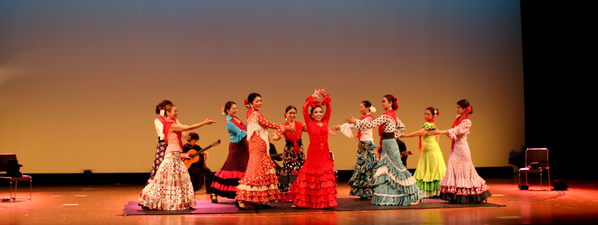
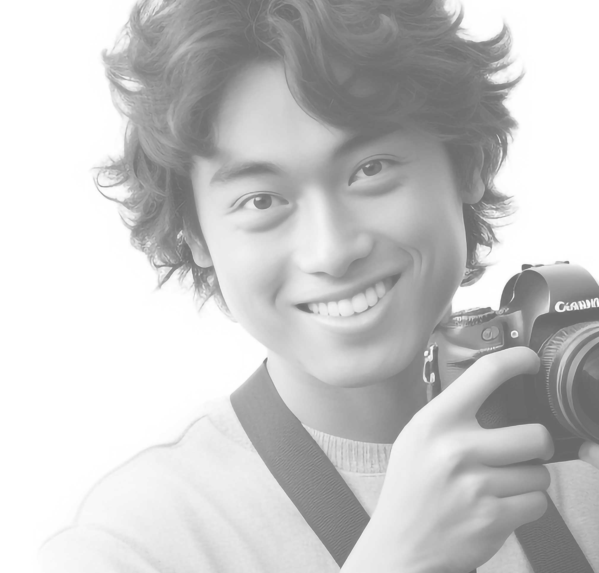
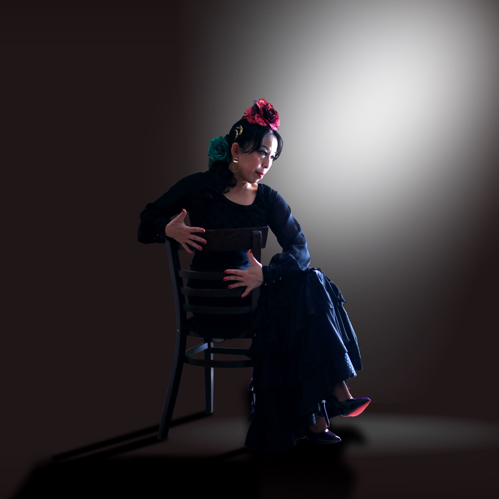

私と Flamenco
幼い頃から踊ることが大好きで、5歳よりバレエとピアノを学ぶ。
中学・高校では新体操に打ち込み、その後JAZZダンスなど様々なダンスを経験。
25歳の頃、フラメンコと出会い、その奥深い魅力に惹かれ転向する。
日本では、浜松にて河野麻耶氏に師事しフラメンコの基礎を学び、その後、名古屋にて磯村崇史氏に師事。舞踊としての構成力や表現を磨きました。
さらに本場スペインへも幾度となく渡り、ホセ・ガルバン、ファン・ポルピージョ、ピラール・オルテガ、カルメン・レデスマ、ベレン・マジャをはじめとする多くのスペイン人アーティストに師事し研鑽を積む。
また、スペイン滞在中には、日本人フラメンコ指導者である渡部純子氏にも学び、日本人の身体特性に即した指導と表現について理解を深めています。
近年でも、独自の振付けに加え、スペイン人アーティストや、東京を拠点に活動するフラメンコ舞踊家・本田恵美氏に振付を依頼し、作品創りを通して舞台表現を磨き続けています。
「教えてほしい」という声をきっかけに、2000年、自然な流れの中でAiRe Flamenco Studio を設立。
愛知県岡崎市を拠点に、安城市・豊田市・豊橋市エリアへと活動を広げながら、フラメンコを通した文化・芸能・芸術活動を続けています。
現在は、AiReが創り出す世界観を「AiReの舞踊団」として捉え、一人ひとりの個性を大切にしながら、生徒と共に舞台表現を創り上げている。
長年続けてきたピアノのご縁から、YAMAHAピアノ講師より「クリスマスディナーショーでのコラボレーション」の声をかけていただいたことをきっかけに、初めて人前でフラメンコを披露。
そこから現在へと続く、私のフラメンコ舞台人生が始まりました。
これからも、フラメンコという芸術を通して、一人ひとりの魅力が舞台で輝く瞬間を、生徒さんと共に創り続けていきたいと考えています。
Profileプロフィール

Dancer講師

Activity活動内容

AiRe Flamenco studio は、2000年に岡崎市でスタートし、現在は安城・豊田・日進・豊橋にも教室を展開しています。初心者から経験者まで、年齢やレベルに合わせてフラメンコを楽しめるクラスを開講中です。
東海地域・愛知県を中心に活動し、名古屋のスペイン料理店「エルトレロ」では2009年からレギュラー出演。生徒さんも年間約30〜50回程の様々な定期公演や地域イベントステージに出演し、本格的な生演奏での舞台を経験しています。
踊ることの楽しさ、音楽との一体感、色んなステージでの人との繋がりを大切にしながら、フラメンコの魅力を伝え続けています。